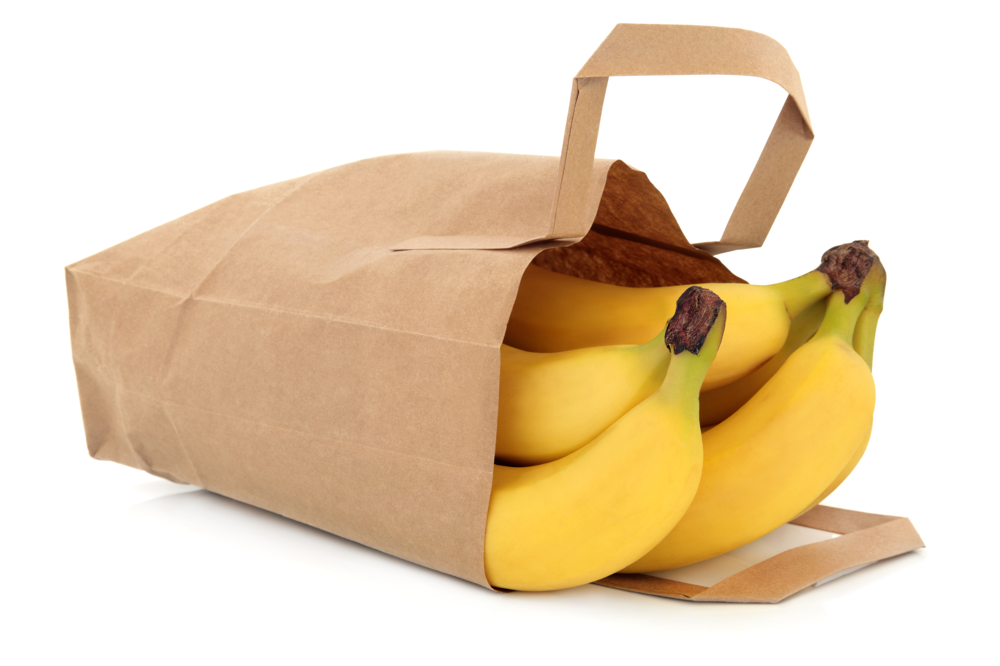
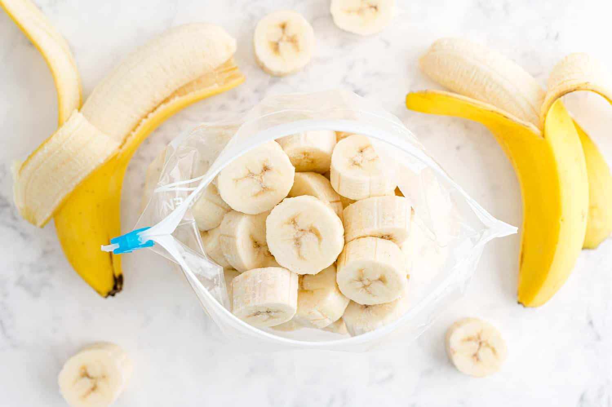
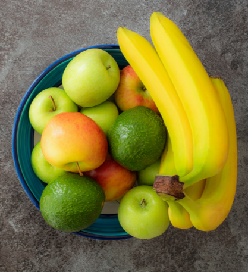
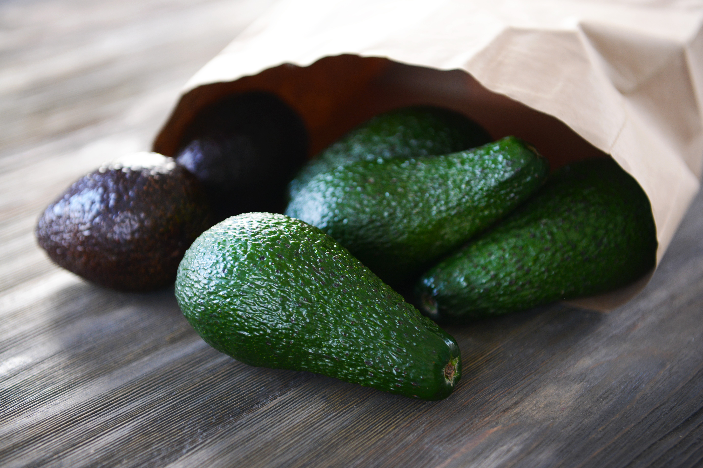
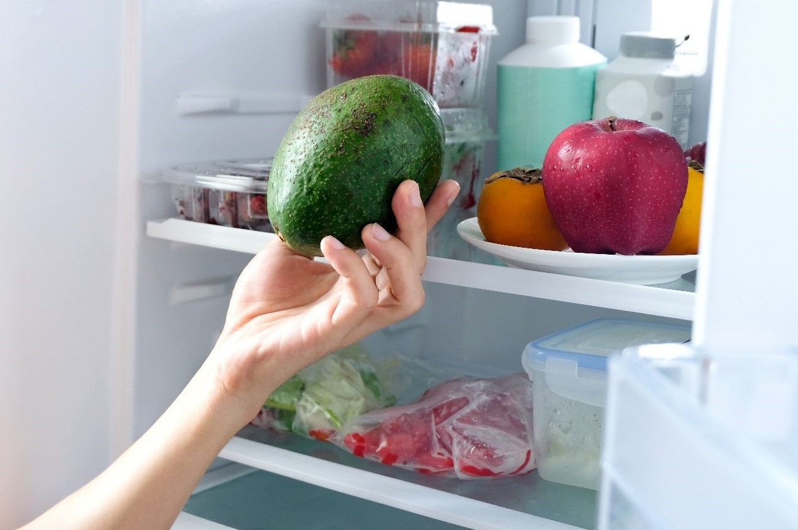

- פירות
- ירקות
- דגים ובשר
- מאפים
- קטניות
- ביצים ומותרי חלב
- שמנים, קפה ותה
- פיצוחים

בחרו אחד מהמזונות שברשימה ולמדו כיצד לאחסן אותו נכון
אחסון בננות
איפה לאחסן?
בננות אסור להכניס למקרר; הקור פוצע את קליפת הפרי ומאיץ את השחרתו עוד לפני שהבננה מספיקה להבשיל
וגם הטעם , המרקם והערכים התזונתיים שלה מתקלקלים במקרר .
ולכן, יש לאחסן את הבננות בסלסלת הפירות -במקום מאורר ומוצל, בטמפרטורת החדר.
רצוי להניח את הבננות כשהן מחוברות יחד ולא נפרדות זו מזו- כך הן נשארות טריות יותר.

איך להאיץ את ההבשלה של הבננות כשהן עדיין ירוקות?
הכניסו אותן לשקית נייר יחד עם תפוח, אבוקדו או אגס בשל; פירות אלו גורמים לבננה לפלוט גז בשם אתילן
המאיץ את ההבשלה שלה. משך ההבשלה עשוי לקחת בין יום לחמישה ימים.
איך ניתן למנוע מהבננות להירקב כשהן בשלות ?
עטפו את קצוות הגבעולים שלהן בניילון נצמד/נייר כסף וכך תאטו את הימלטות גז האטילן (שמאיץ את תהליך ההבשלה).
אין לעטוף את הבננות בשקית ניילון! זה גורם ללחות שמאיצה את הריקבון שלהן.
בננות יכולות להישאר טריות בין 5 ל7 ימים.

האם ניתן להקפיא ?
כן, רק ללא הקליפה; כשהקליפה קפואה היא נצמדת לפרי וקשה מאוד להסיר אותה ממנו.
בננות במקפיא יכולות להישאר טריות עד שישה חודשים
רצוי לחתוך מראש את הבננות ולעטוף אותן בנייר כסף / ניילון אטום או להניח אותן בכלי פלסטיק.
אחסון אבוקדו
איפה לאחסן את האבוקדו כשהוא עוד קשה?
הניחו אותו על השיש בטמפרטורת החדר, הרחק מאור שמש טבעי.
ההבשלה עשויה להימשך עד חמישה ימים.
איך ניתן להאיץ את הבשלת האבוקדו?
הכניסו את האבוקדו לתוך שקית נייר חומה יחד עם בננה/תפוח
או אפילו מלאו את התחתית של השקית בקמח.
שיטה זו מגבירה את כמות גז האתילן שנפלטת החוצה מהפירות ומזרזרת את ההבשלה שלהן.
איך לשמור על האבוקדו טרי לאורל זמן ?
כדי לשמור על אבוקדו טרי לאורך זמן (בין אם הוא חתוך ובין אם שלם), יש להכניס אותו למקרר ולחסום את המגע שלו עם אוויר.
- קבלו כמה טיפים לאחסון אבוקדו במקרר:
- מאחסנים חתיכות של אבוקדו בתוך קופסה סגורה יחד עם מיץ לימון.
- מניחים את האבוקדו בתוך קופסא סגורה, מעל לחתיכות של בצל סגול.
-
מורחים שמן זית על כל השטח של האבוקדו (גם על החלק החשוף וגם על הקליפה),
ומכניסים לכלי אטום. מריחה נכונה של אבוקדו בשמן זית יוצרת שכבת הגנה אשר
מפחיתה את החשיפה שלו לאוויר.
כמה זמן אבוקדו יכול להישאר טרי במקרר ?
אבוקדו בשל נשמר במקרר למשך 3- 5 ימים.
האם ניתן להקפיא אבוקדו ?
כן. על מנת להקפיא את האבוקדו יש להסיר את הקליפה שלו,
לחתוך אותו לפרוסות ולעטוף אותן יחד בניילון. רצוי לטפטף מעל לימון על מנת שישמור על
הטריות שלו. אבוקדו יכול להישאר במקפיא 4- 6 חודשים. אבוקדו קפוא הוא נהדר לשייקים,
גלידות ואפילו ניתן להכין ממנו מחית או לשים אותו בסלט.

אחסון ענבים
איפה לאחסן?
המקום הטוב ביותר לאחסון הענבים הוא המקרר. רצוי להניח אותם בחלק האחורי של המגירות התחתונות (בד"כ זה המקום הקר
ביותר) והרחק ממזון מסריח כמו בצל או דגים (ענבים סופגים ריחות).
ענבים יכולים להישאר טריים במקרר עד שלושה שבועות

באיזה כלי לאחסן?
ענבים צריכים מרחב נשימה כדי להחזיק מעמד זמן רב ככל האפשר, ולכן אין להכניס אותם לתוך שקית אטומה
הכנסתם לשקית אטומה יוצרת לחות שגורמת לרקבון שלהם) .
רצוי להכניס את הענבים בתוך האריזה המקורית שלהם (שיש בה כבר פתחי אוורור)
או בתוך מיכל מאוורר אחר.

האם לשטוף לפני האחסון?
לא. שטיפת הענבים גורמת לפרי להירקב מהר יותר ולכן יש לשטוף רק לפני האכילה

האם ניתן להקפיא?
בהחלט. פשוט הכניסו אותן לתוך שקית ניילון אטומות
ענבים קפואים הם חטיף מרענן ובריא וניתן גם להכין מהם שייקים